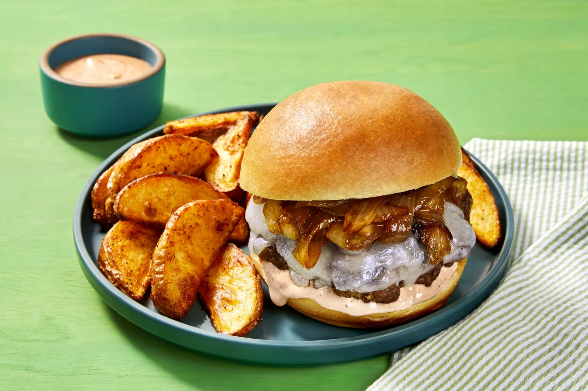

White Cheddar Burgers

White Cheddar Burger with Old Bay Fries, Caramelized Onions & Special Sauce
It’s all in the texture! To achieve crispy, craggy edges, we form ground beef into balls, then press down in a hot pan with a spatula to create super-thin patties. In the last few minutes of cooking, we top them with gooey white cheddar, then sandwich each between a potato bun with caramelized onion. A homemade special sauce is perfect for pairing with the Old Bay fries on the side—and will elicit major “oohs” and “ahhs” from your dining companions.
Ingredients
- Yellow Onion
- Yukon Gold Potatoes
- Old Bay Seasoning
- Mayonnaise
- Ketchup
- Dijon Mustard
- Ground Beef
- White Cheddar Cheese
- Potato Buns
- Kosher Salt
- Pepper
- Cooking Oil
- Sugar
Steps
- Prep - Adjust rack to top position and preheat oven to 425 degrees. Wash and dry produce. Cut potatoes into ½-inch-thick wedges. Halve, peel, and thinly slice onion.
- Roast Potatoes - Toss potatoes on a baking sheet with a drizzle of oil and half the Old Bay Seasoning (you’ll use more later). Season lightly with salt and pepper. TIP: No need to season generously— there’s already salt and pepper in the seasoning! Roast on top rack until browned and crispy, 20-25 minutes.
- Caramelize Onions - While potatoes roast, heat a large drizzle of oil in a medium, preferably nonstick, pan over medium-high heat. Add onion; cook, stirring occasionally, until browned and softened, 8-10 minutes. Add 1 tsp sugar (2 tsp for 4 servings) and a splash of water; cook until onion is caramelized and jammy, 2-3 minutes more. Season with salt and pepper. Turn off heat; transfer to a small bowl.
- Make Sauce & Form Beef - Meanwhile, in a second small bowl, combine mayonnaise, ketchup, mustard, and as much remaining Old Bay Seasoning as you like. Set aside. Form beef into two equal-size balls (four balls for 4 servings); season all over with salt and pepper.
- Cook Patties - Heat a drizzle of oil in pan used for onion over medium-high heat. Once pan is hot, add beef. Firmly flatten each ball with a spatula to create very thin patties. (TIP: Do so carefully; oil may splatter a bit.) Cook to desired doneness, 3-4 minutes per side. (Don’t worry if the patties aren’t perfectly round—those irregular edges will turn crispy.) In the last 1-2 minutes of cooking, top patties with cheddar; cover pan until cheese melts. Remove from heat.
- Finish & Serve - While patties cook, halve and toast buns. Divide buns between plates and fill with patties, caramelized onion, and half the special sauce. Serve Old Bay fries on the side with remaining special sauce for dipping.